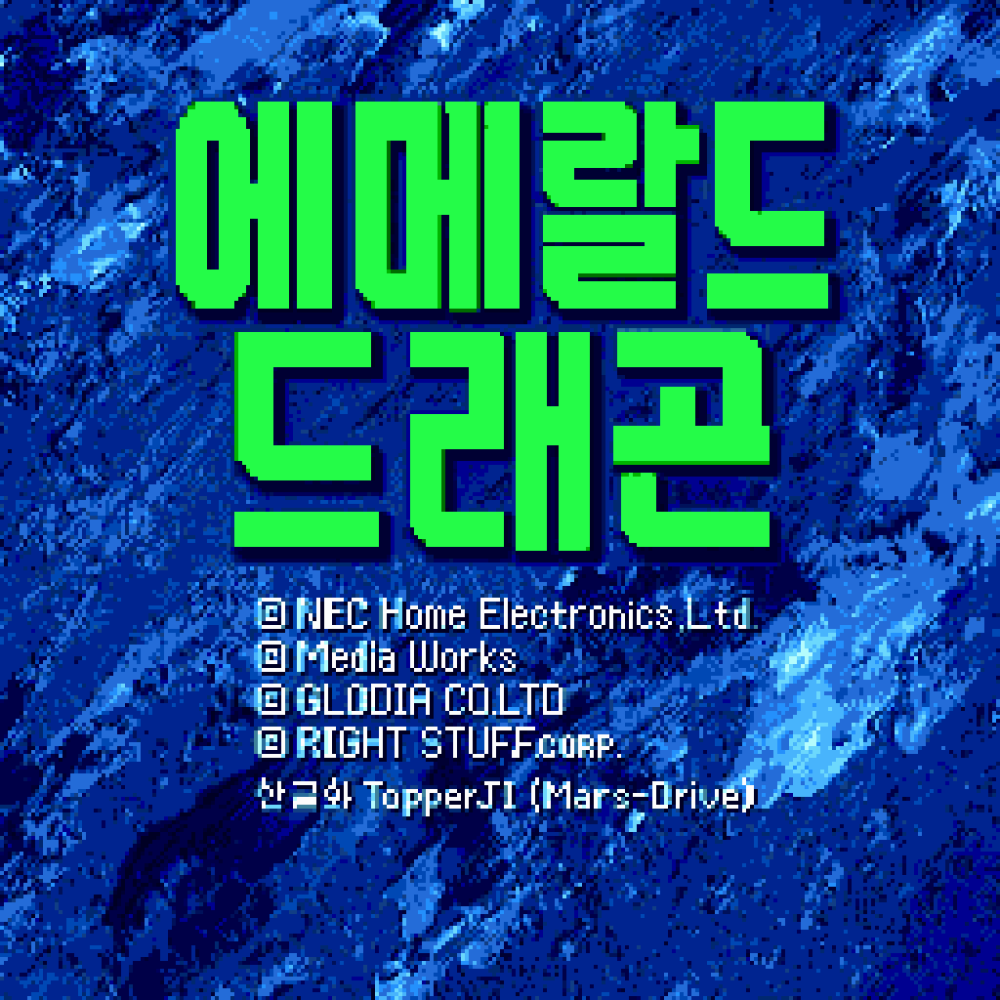
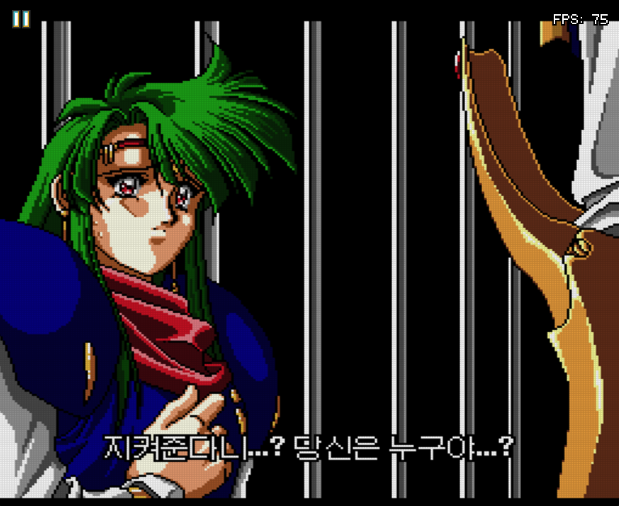
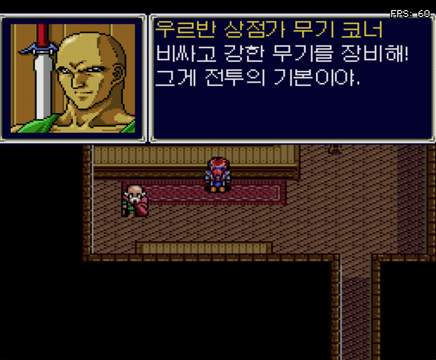
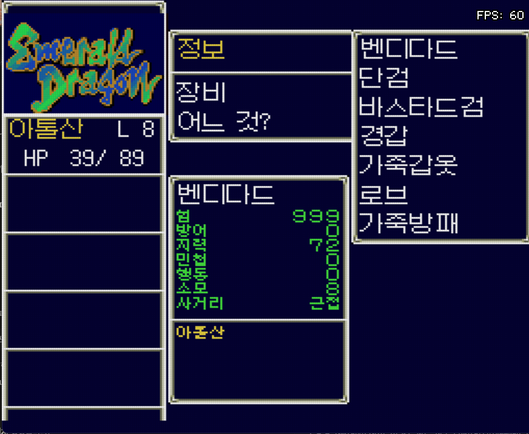
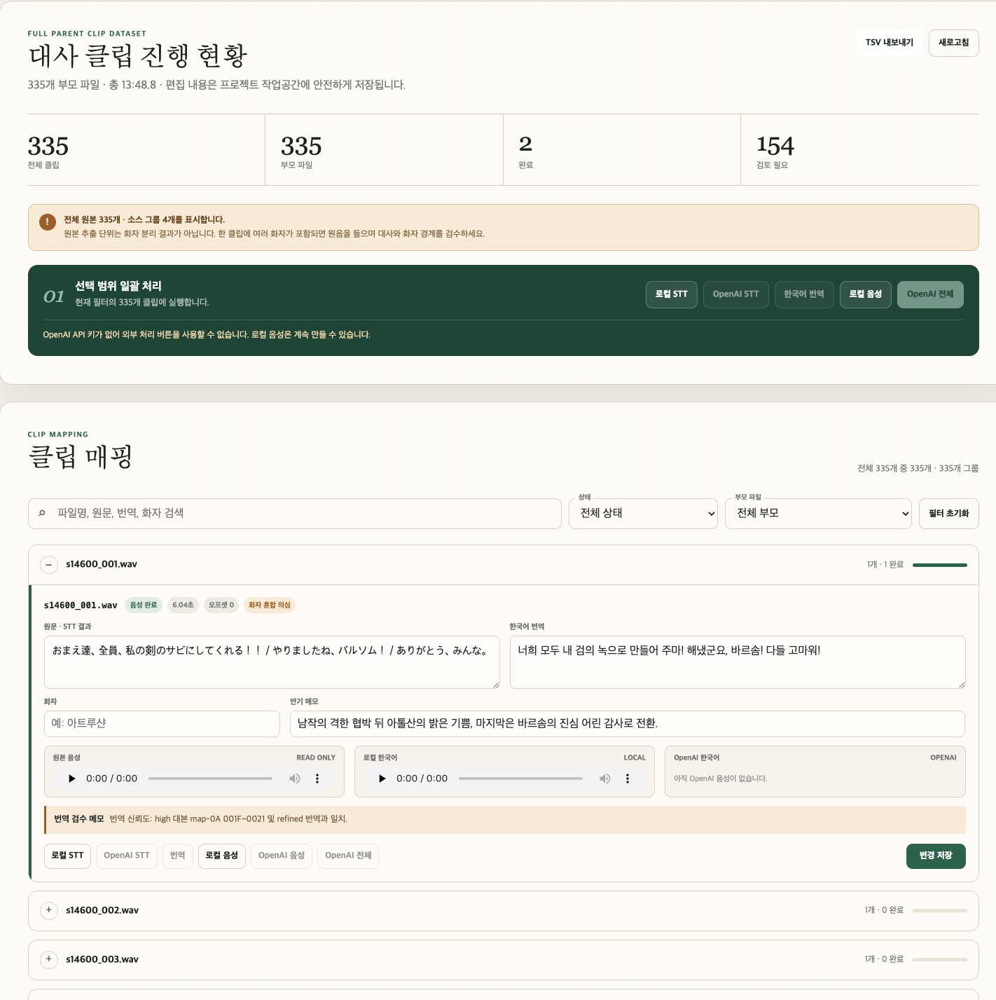
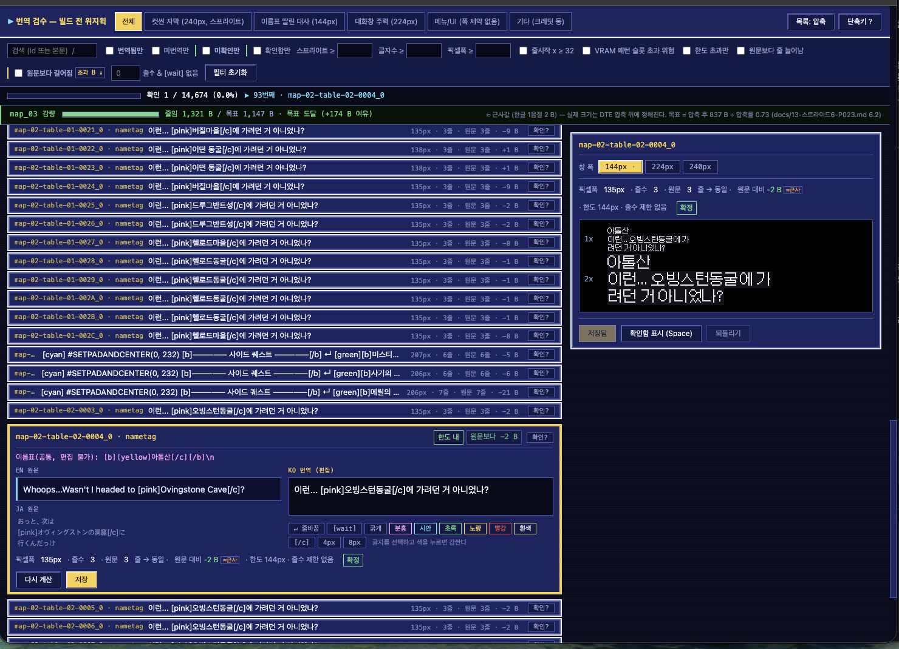

TEXT SYSTEM
글꼴과 대사창
12,600여 항목과 이름표 9,500여 행. 화면 폭에 맞추느라 문장을 계속 깎았습니다.
한국어 패치 v0.6
1994년 PC Engine 판입니다. 대사·메뉴와 함께, 원작에서 음성만 나오던 컷신에 스프라이트 한국어 자막을 새로 구현했습니다.

ISH-BURN ARCHIVE · 2026
01 / KOREAN EDITION
대사·메뉴·아이템·지명을 옮겼고, 원작에서 음성만 나오던 컷신에는 한국어 자막을 스프라이트로 띄웠습니다. 화면 폭과 스프라이트 한계 안에서 글자 수를 맞췄습니다.



02 / TRANSLATION LOG
이 게임은 대사량이 여느 RPG와 비교가 안 되게 많습니다. 그런데 한국어로 옮기면 데이터가 원본보다 커지고, 들어갈 자리는 정해져 있습니다. 문장을 줄이고 압축을 짜내며 어떻게든 밀어 넣는 게 내내 일이었습니다.
TEXT SYSTEM
12,600여 항목과 이름표 9,500여 행. 화면 폭에 맞추느라 문장을 계속 깎았습니다.
VISUAL SCENE
원작 컷신은 자막 없이 일본어 음성만 재생됩니다. 영문 패치가 만든 스프라이트 출력 구조를 이어받아 한국어 자막 35개 장면 505줄을 구현하고, 한 화면 2줄·240픽셀 안에 맞췄습니다.
TEST PIPELINE
둘을 자동으로 가려냅니다. 어느 쪽에서 시작해도 결과가 같은지 왕복으로 확인했습니다.
03 / PRODUCTION TOOLS
14,674줄을 눈으로 세는 건 불가능해서 도구를 먼저 만들었습니다. 음성 쪽도 같은 이유로 만들었는데, 그쪽은 쓰다가 멈춰 있습니다.
고친 문장을 게임 화면 그대로 미리 그려 줍니다. 대사 종류마다 창 폭이 달라서 같은 문장도 어디 나오느냐에 따라 넘치고 안 넘치고가 갈립니다. 픽셀로 재서 한도를 넘는 것만 걸러 봅니다.
컷신 음성 335개를 뽑아 원문·번역·화자·연기 메모를 정리하고 원본과 만든 음성을 나란히 듣는 도구입니다. 더빙을 할지 정하지 못해 멈춰 뒀습니다.
두 도구의 화면과 왜 음성을 멈췄는지는
04 / DEVELOPMENT FILM
실기 화면에서 일반 대사와, 원래 음성만 나오던 컷신 위에 스프라이트 한국어 자막이 표시되는 모습을 확인할 수 있습니다.
05 / QUALITY OF LIFE
번역 확인용으로 단축 메뉴에 넣은 것들입니다. 다 끝나고 뺄까 하다 그냥 뒀습니다. 쓰지 않으면 없는 것과 같습니다.
원판에 잠들어 있던 개발자용 화면입니다. 부를 방법이 없던 걸 메뉴에서 열 수 있게 했습니다. 이동·레벨·아이템이 다 됩니다.
화면이 원판 그대로라 표시는 영문입니다. 만든 게 아니라 깨운 것뿐입니다.
돌아다니면 알아서 전투가 붙는 게임인데, 켜면 걸리지 않습니다. 지역을 훑으며 대사만 볼 때 쓰던 것인데, 레벨 안 올리고 이야기만 보고 싶을 때도 쓸 만합니다.
가 본 곳으로 바로 갑니다.
셋 다 원래 없던 것을 테스트 편의상 단축 메뉴에 넣은 겁니다. 평범하게 진행하시면 마주칠 일이 없습니다.
06 / GET THE PATCH
정품에서 뜬 원본이 필요합니다. 웹 패처는 파일을 서버로 보내지 않습니다. xdelta 쪽을 선호하시면 그것도 있습니다.
시스템 카드도 같이 받으셔야 합니다. 한글 글꼴이 CD 가 아니라 카드 안에 들어 있습니다.
07 / MAKER'S JOURNAL
“무더운 여름,
또 하나의 한글화를 시작했다.”
이스 IV에서 정리한 파이프라인을 다른 게임에도 적용할 수 있을까. 그 궁금증에서 시작된 첫 기록입니다.
네이버 블로그에서 읽기GET THE PATCH
둘 중 편한 쪽으로 하시면 됩니다. 결과물은 바이트까지 같습니다.
설치할 것이 없습니다. 브라우저에서 파일을 고르면 끝납니다. 초판인지 Rev 1인지 몰라도 됩니다 — 넣으시면 알아서 가려냅니다.
.bin 파일 (보통 774 MB). 초판이든 Rev 1이든 상관없습니다EmeraldDragon_KO.img 를 저장합니다.cue 받기 — 패치가 끝나면 같이 받으시면 됩니다. 고치실 것 없습니다브라우저 안에서만 읽고 씁니다. 개발자도구(F12)의 네트워크 탭을 켜 두고
패치해 보시면 직접 확인하실 수 있습니다. 계산한 CRC32 조차 보내지 않습니다.
화면에 해시가 뜨고 복사 단추가 생깁니다. 그걸 버그 신고로 알려 주시면 그 판에 맞는 패치를 만들어 추가할 수 있습니다.
크롬 · 엣지 · 웨일을 권합니다. 774 MB 를 다루므로 메모리에 여유가 있는 편이 좋습니다.
원본이 바이트 단위로 정확히 일치해야 적용됩니다. 립이 다르거나 트랙 구성이 다르면 xdelta3 가 거부합니다 — 그때는 웹 패처를 쓰세요.
적용: xdelta3 -d -s <원본> <패치.xdelta> <출력>
.cue 는 아래 "결과" 칸에서 받으시면 됩니다.
초판과 Rev 1 의 트랙 배치가 같아서 어느 쪽으로 패치하셨든 이 하나면 됩니다.
웹 패처에 파일을 넣어 보세요. 판별만 하고 받을 파일 이름을 알려 드립니다 — 패치까지 안 하셔도 됩니다. 명령어로 해시를 뽑는 것보다 빠릅니다.
나중에 나온 판입니다. 슬롯머신 소지금 관련 수정이 들어 있습니다 — 초판과 1.18%만 다르고 실제 변경은 8바이트입니다.
| 원본 크기 | 774,506,544 B |
| 원본 CRC32 | e623b691 |
| 원본 SHA256 | b8da49dd4a695dc8282330a55efd7b56146c21bf350d61f9e94c778c07271df9 |
| 받을 파일 | emdr-ko-v0.6-rev1.xdelta 495 KB |
처음 나온 판입니다. 영문 번역 패치는 Rev 1 전용이지만 그건 빌드할 때 이야기이고, 이미 만들어진 결과물을 적용하는 것은 별개라 초판용도 따로 만들었습니다.
| 원본 크기 | 774,506,544 B |
| 원본 CRC32 | d21402df |
| 원본 SHA256 | 0c7edf216fe9bede1714a0ba065054c8f405db24e709317fa9b26d7202f83954 |
| 받을 파일 | emdr-ko-v0.6-rev0.xdelta 712 KB |
왕복 검증을 마쳤습니다. 아래 해시가 다르면 원본이나 적용 과정에 문제가 있는 것입니다.
| 크기 | 774,506,544 B |
| SHA256 | 640e45ebab1806e8091f0e33100762830005a82e2ba31fbae7177d6bb5064e3b |
| 함께 받을 것 | EmeraldDragon_KO.cue 2.5 KB |
이미지만 패치하고 순정 카드로 실행하면 부팅할 때 안내 화면에서 멈춥니다.
한글 글꼴이 CD 가 아니라 시스템 카드 쪽에 들어가기 때문입니다.
순정 syscard3.pce(256 KB)에 적용하는 패치입니다 — 카드 파일 자체는 배포하지 않습니다.
순정이 아니면 xdelta3 가 거부하므로, 카드가 맞는지도 이걸로 확인됩니다.
| 원본 | 순정 syscard3.pce · 262,144 B |
| 원본 SHA256 | e11527b3b96ce112a037138988ca72fd117a6b0779c2480d9e03eaebece3d9ce |
| 결과 SHA256 | 3417e86f94686d4afc31a06fca75f9e88cf89b2a61fd7ffa5fe297e030f83a49 |
| 받을 파일 | emdr-ko-v0.6-syscard.xdelta 30 KB |
이 카드 하나로 두 게임이 다 됩니다. 두 글꼴이 카드 안에서 겹치는 자리가 없습니다. 이스 IV 쪽 카드를 지우고 이걸 넣으셔도 됩니다.
웹 패처 2단계에서 순정 syscard3.pce 를 넣으면 한글 카드를 만들어 줍니다. 그 파일을 에뮬레이터 펌웨어 폴더에 syscard3.pce 라는 이름으로 넣으세요. 레트로아크는 system/ 폴더입니다.
.cue 를 같은 폴더에패처와 아래 목록에서 바로 받으실 수 있습니다. 트랙 배치가 이 파일에 들어 있어서 .img 를 직접 열면 소리가 안 납니다. 이미지 이름을 바꾸시려면 .cue 첫 줄도 같이 바꿔 주세요.
.cue 를 여세요. Mesen 또는 레트로아크의 Beetle PCE 코어를 권합니다 — 다른 PCE 코어는 이 형식을 제대로 못 읽는 경우가 있습니다.
시스템 카드를 제대로 넣었는지는 게임을 시작하기 전에 알 수 있습니다. 디스크가 부팅하면서 화면을 하나 띄우는데, 카드에 따라 다른 화면이 나옵니다.
Emerald Dragon 1989 원작 Glodia 1994 PCE Alfa System 2025 영문 Supper/cccmar/Oddoai 2026 한글 TopperJI/Mars-Drive
한글이 보이면 카드가 맞습니다
KOREAN SYSTEM CARD REQUIRED
PLEASE INSERT IT AND RESET.
MARS-DRIVE 2026
전부 영문이면 카드가 순정입니다
순정 카드로도 게임은 돌아갑니다. 다만 한글 글꼴이 카드 안에 있어서 글자가 전부 깨진 채로 진행됩니다. 그 상태로 몇 시간을 하다가 원인을 찾는 것보다, 시작하기 전에 멈추고 알려 드리는 편이 낫다고 보아 일부러 넣은 장치입니다.
그러니 이 화면이 나온 것 자체는 고장이 아닙니다. 카드를 바꿔 넣고 다시 시작하시면 됩니다.
syscard3.pce 이름으로 넣으세요..cue 를 열었는지 확인하세요. 오디오 트랙 정보가 거기 있습니다.RELEASE NOTES
첫 공개입니다. 본편을 처음부터 끝까지 한국어로 진행할 수 있습니다. 아직 다듬을 곳이 남았지만, 여기서부터는 같이 보는 편이 빠르겠다 싶었습니다.
v0.6 이 첫 공개입니다. 그 앞은 내부 빌드였습니다.
이 패치는 Supper · cccmar · Oddoai-sama 의 영문 번역 패치(2025) 위에서 만들었습니다. 원작은 Glodia(1989), PC Engine 이식은 Alfa System(1994) 입니다.
Text 가 Texe 로번호가 띄엄띄엄한 자리는 그날 빌드가 죽었거나 고친 걸 되돌린 자리입니다.
DEVELOPMENT LOG
7월 31일에 시작해 나흘 만에 화면이 한국어가 됐습니다. 그 사이에 막힌 곳, 헛짚은 곳, 만들다 만 것을 그대로 적었습니다.
셋 다 원래 없던 것을 테스트 편의상 넣었습니다. 번역을 확인하려면 게임 곳곳을 빠르게 돌아다녀야 해서 만든 것인데, 다 끝나고 뺄까 하다 그냥 뒀습니다. 쓰지 않으면 없는 것과 같습니다.
원판에 개발자용 화면이 잠들어 있었습니다. 부를 방법이 없던 걸 메뉴에서 열 수 있게 했습니다. 이동·레벨·아이템이 다 됩니다.
화면이 원판 그대로라 표시는 영문입니다. 만든 게 아니라 깨운 것뿐입니다.
돌아다니면 알아서 전투가 붙는 게임입니다. 켜 두면 걸리지 않습니다. 지역을 훑으며 대사만 확인할 때 쓰던 것인데, 레벨 안 올리고 이야기만 보고 싶을 때도 쓸 만합니다.
가 본 곳으로 바로 갑니다.
7월 31일에 시작해 나흘 만에 화면이 한국어가 됐습니다. 그 사이 벽이 몇 번 있었습니다.
갖고 있던 파일에서 오디오 42.5분이 통째로 빠져 있었습니다. 후반부 음악이 안 나오던 이유입니다. 목록엔 트랙이 다 있다고 적혀 있었는데 파일은 중간에서 끝나 있었습니다.
반대였습니다. 원본은 같은 문장을 사전으로 거의 공짜 처리하는데 한글은 그 이득을 못 받습니다. 번역할수록 커졌습니다.
사전이 게임 전체에서 공유되는 것도 몰랐습니다. 숲 하나 번역했더니 다른 지역이 전부 커졌습니다.
자주 나오는 글자 짝을 사전에 넣는 구조인데, 그 판정이 한글을 통째로 걸러냈습니다. 한국어 압축률이 정확히 0이었습니다.
영문 시절 넣어 둔 "특정 지역 40배 우대" 설정도 남아 있어서, 쓰지도 못할 사전 자리를 축내고 있었습니다.
일본어판을 복사한 뒤 덮어쓰는 순서라, 중간에 죽으면 멀쩡한 일본어판이 남습니다. 실패한 줄 모르고 열면 게임은 잘 돌아가는데 한국어도 영어도 없습니다.
파일 크기와 해시가 바뀐 걸 "반영됐다"로 읽은 게 화근이었습니다. 그 위에 틀린 진단을 둘 더 쌓았습니다.
Text 가 Texe 로 나왔다Not은 Noe, carrying은 carryang.
CPU 명령 앞에 붙인 한 줄이 사전에서 한 칸 앞을 읽게 만들고 있었습니다.
높은 번호는 우연히 맞아떨어져 더 늦게 드러났습니다. 실기 화면을 보고 짚어 주신 덕에 잡았습니다.
렌더러를 의심했는데, 그 이름이 다른 칸에 따로 들어 있는 걸 못 본 것이었습니다. 찾고 나니 9,539행이 한 번에 바뀌었습니다.
영어를 열쇠로 쓰면 안 됐습니다. Girl 하나가 일본어로는 少女·娘·女の子 셋입니다.
영문 패치를 그대로 구운 상태에서 이미 뱅크 217개 중 119개가 여유 0바이트였습니다. 글꼴과 렌더러를 어디 넣을지가 계속 문제였습니다.
이번 릴리스의 핵심 작업입니다. 원작 컷신은 자막 없이 일본어 음성만 나옵니다. 그 장면들 위에 스프라이트 한국어 자막 35개 장면 505줄을 구현했습니다. 한 화면의 한계는 2줄 × 240픽셀입니다.
일본어판 컷신은 음성만 나오고 자막이 전혀 없습니다. 영문 패치가 나중에 마련한 출력 구조를 이어받아, 한국어판에서는 일본어 원문을 직접 옮긴 문장을 화면 위에 띄웠습니다.
방식은 스프라이트입니다. 배경에 박아 넣은 그림이 아니라 캐릭터처럼 매 프레임 화면 위에 그리는 자막입니다. 그래서 글자를 바꾸는 것만으로 끝나지 않고 색·개수·메모리·프레임 처리까지 함께 맞춰야 했습니다.
화면이 서서히 밝아지는 동안에는 스프라이트 색이 같이 어두워집니다. 자막도 스프라이트니 같이 묻힙니다. 영문 패치가 그 세 줄만 배경 타일로 따로 깔아 둔 이유입니다.
화면을 그리는 도중에 색을 바꿔치기 해서 자막만 밝게 남깁니다. 왜 그랬는지 알고 나니 건드릴 수 없어 그대로 뒀습니다.
게임은 컷신 동안 세이브 데이터를 안전한 곳에 대피시키는데, 그 자리가 자막 스크립트가 쓰는 곳과 같았습니다. 장면이 커진 만큼 자막 자리가 줄어듭니다.
어떤 장면은 영문판 기준으로 이미 0바이트 남아 있었습니다.
캐릭터를 그리는 데 쓰는 목록 512바이트를 다른 뱅크로 옮겼더니 장면마다 360바이트씩 늘었습니다. 한 장면은 448에서 808이 됐습니다.
"몇 초 지점"을 읽는 게 아니라 소리가 시작된 순간을 세고 사이를 프레임으로 채웁니다. 덕분에 한글이 좀 느려도 어긋남이 흡수됩니다.
흡수할 양이 계속 늘면 그땐 멈출 수 있어서, 아직 지켜보는 항목입니다.
원작은 두 바이트로 6,886자를 쓰던 구조인데 영문 패치가 걷어내고 한 바이트 96칸으로 좁혔습니다. 알파벳엔 넉넉하지만 한글은 어림도 없습니다.
되돌리면 영문 패치의 다른 기능이 깨집니다. 대신 같은 규약으로 새 출력 경로를 빈 공간에 써넣었습니다.
컷신 30건이 실패로 나왔는데, 게임은 정상이고 검사 도구가 낡은 것이었습니다. 한글 바이트를 압축 코드로 착각하고 있었습니다.
고친 뒤 일부러 망가뜨려 봤습니다. 통과가 "무시해서 얻은 통과"가 아닌지 확인하려면 그 방법뿐입니다.
화면 대부분이 검게 나오고 초당 60프레임이 7까지 떨어졌습니다. 자막 처리와 화면 갱신 순서가 21개 장면 중 그 하나에서만 겹쳐 있었습니다.
여기서 한 번 헛짚었습니다. 자막 번호를 안 세고 배경 색으로 짐작해 엉뚱한 줄을 끄고 고쳤다고 했는데, 같은 화면을 다시 찍어 보내 주셔서 알았습니다.
되는지 확인까지는 갔는데, 하는 게 맞는지에서 멈췄습니다. 만들어 둔 두 도구와 335개 전체 데이터는 그대로 보존했습니다.
음성은 CD 오디오 트랙이 아니라 데이터 트랙 안에 압축돼 들어 있고, 어디서부터 어디까지가 한 대사인지 알려 주는 목록도 없습니다. 소리 크기 변화로 경계를 찾아 잘라냈습니다.
전부 335개 · 13.8분, 한 대사가 평균 2.5초입니다. 짧은 대신 개수가 많습니다.
대사 위치가 스크립트에 박혀 있어 까다로울 줄 알았는데, 같은 자리에 같은 길이로 덮어쓰면 게임이 원래 값을 그대로 씁니다. 스크립트를 안 건드려도 됩니다.
한국어가 길어지면 말 속도를 올리거나 앞뒤 무음을 줄여 맞추면 됩니다. 압축기도 원본 도구에 이미 있습니다.
음성패치 툴에는 부모 음성 335개 전체를 불러와 원문, 한국어 번역, 화자, 연기 메모와 검수 상태를 정리했습니다. 별도의 번역·감수 툴에서는 화면 폭과 스프라이트 한계를 실시간으로 확인하며 문장을 다듬었습니다.

여기서 알게 된 것 하나 — 한 클립에 여러 사람 대사가 같이 들어 있습니다. 소리가 끊기는 지점으로 잘랐더니 화자가 바뀌어도 안 끊깁니다. 위 화면의 첫 클립도 남작·아톨산·바르솜 셋이 한 파일에 있어서 "화자 혼합 의심"이 붙었습니다. 더빙을 하려면 이것부터 갈라야 합니다.

이쪽이 실제로 시간을 가장 많이 먹었습니다. 같은 문장이라도 어디에 나오느냐에 따라 넘치고 안 넘치고가 갈립니다 — 이름표 딸린 대사는 144px, 대화창은 224px, 컷신 자막은 240px 입니다. 픽셀로 재서 한도를 넘는 것만 걸러 보고, 지역별로 몇 바이트를 더 줄여야 빌드가 통과하는지도 같이 띄웁니다. 저 화면은 1,321 B 를 줄여 목표보다 174 B 남은 상태입니다.
자막이 이미 나오고 있습니다. 그 위에 목소리를 새로 입히는 게 정말 나은지 확신이 안 섰습니다. 이스 IV 때도 더빙을 두고 의견이 갈렸습니다 — 원래 목소리가 좋다는 쪽이 적지 않았습니다.
335개를 사람 목소리로 채우는 건 번역과는 아예 다른 종류의 일이기도 합니다. 뽑아 둔 자료와 도구는 그대로 남겨 뒀으니, 하기로 하면 여기서 이어가면 됩니다.
BUG REPORT
글자가 깨지거나, 상자 밖으로 넘치거나, 게임이 멈추는 곳을 알려 주세요. 화면 사진을 함께 올려 주시면 원인을 찾는 시간이 크게 줄어듭니다.
여기에 올리시는 사진과 글만 서버에 저장됩니다. 패처는 여전히 아무것도 전송하지 않습니다 — 게임 이미지는 이 페이지 근처에도 오지 않습니다.
불러오는 중 …
USAGE
방문 수와 패치 횟수만 익명으로 셉니다. 게임 파일은 어떤 경우에도 서버로 가지 않습니다 — 이름도, 내용도, 해시도, 쿠키도요.
집계를 불러오는 중 …
공개된 주소라 누구나 요청을 보낼 수 있어서 정확한 값이 아닙니다. 반대로 광고 차단기가 집계를 막는 경우도 있어 실제보다 적게 잡히기도 합니다. 직접 받아 오프라인에서 적용하신 분은 아예 잡히지 않습니다. "대략 이 정도" 로만 봐 주세요.
MARS–DRIVE / PATCH ARCHIVE
같은 방식으로 만든 PC Engine 한국어화 프로젝트들입니다.
PC ENGINE · SUPER CD-ROM²
대사·메뉴와 함께, 원작에서 음성만 나오던 컷신에 스프라이트 한국어 자막을 구현했습니다. 초판·Rev 1 자동 판별 웹 패처를 제공합니다.
 RELEASED · V0.9.5
RELEASED · V0.9.5PC ENGINE · SUPER CD-ROM²
TopperJI의 이전 PC Engine 한국어화 프로젝트와 웹 패처를 확인할 수 있습니다.
이스 IV 페이지 열기